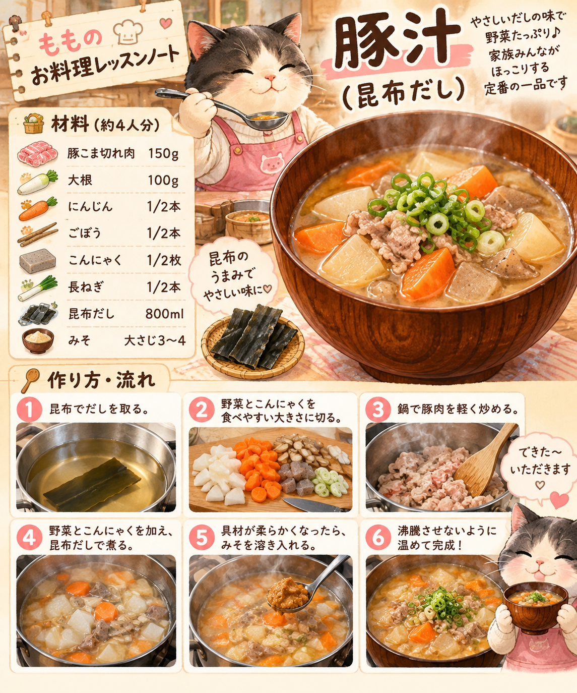
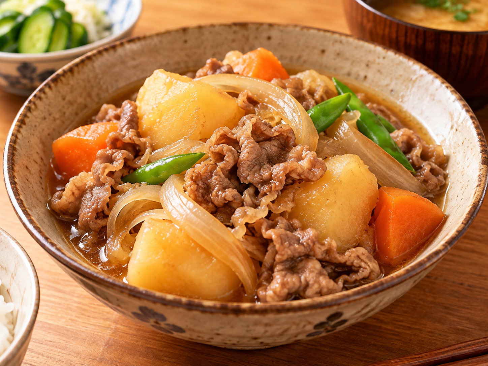
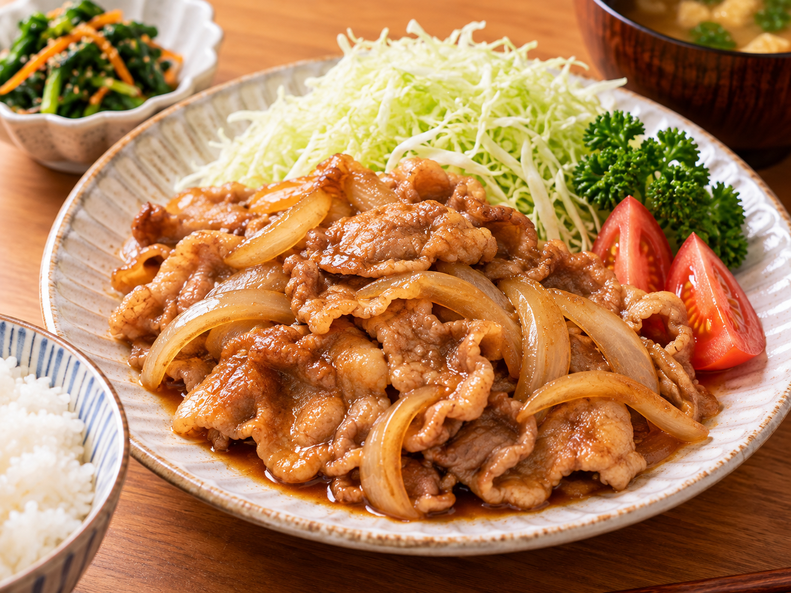

🍖 照り焼きハンバーグ
甘辛い照り焼き味のハンバーグ。
レッスンメモを見る
材料・分量・作り方は記録を確認してから掲載予定♪
猫たち家族のゆるっと日常をお届けする公式ホームページ


たっちゃん家へようこそ！
笑ったり、食べたり、ゴロゴロしたり。
家族のゆる〜い毎日をのぞいていってな♪


家族4人＋ペット3匹。
今日もみんな自由に過ごしてます♪
 たっちゃん
たっちゃん みっちゃん
みっちゃん りく
りく もも
もも てん
てん あめ
あめ ちょこ
ちょこ


料理教室で習ったことを記録中♪
おいしく作れるように、もも頑張るで〜！

料理名を見て「レッスンメモを見る」を押してな♪
分量や手順は確認できたものから追加するで！
甘辛い照り焼き味のハンバーグ。
かぼちゃを使ったスープ。

和食レッスン昆布だしで作った豚汁のレッスンノートやで♪

お料理アルバムほっこりおいしそうな肉じゃが♪

和食レッスン2種類を習ったよ。
ごはんに合うおかず。
これから習う予定のお料理。
ハムを使ったサラダ。


たっちゃん家は今日も
ぼちぼち、のんびり営業中。
また遊びに来てな〜♪
 🐾 TOPへ ↑
🐾 TOPへ ↑